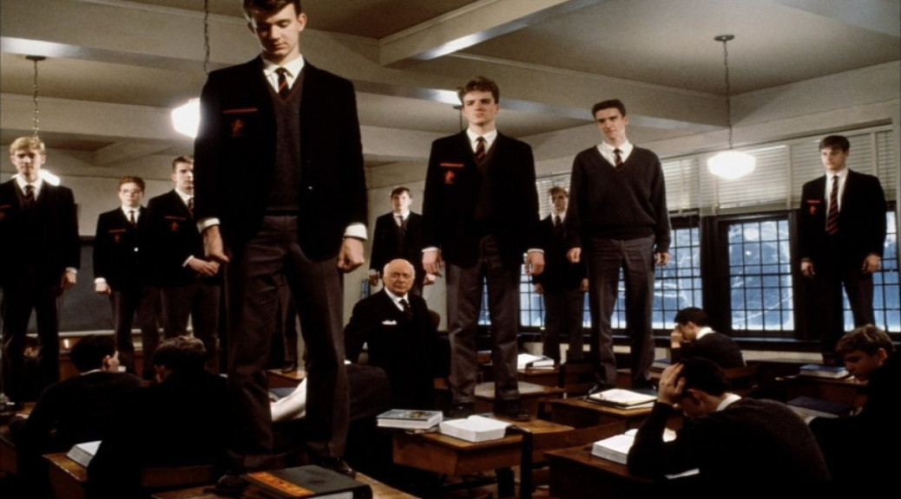

I grew up outside a small town in Norteast Missouri. I have enjoyed music since I was five years old.
I can play the Alto, Tenor, and Baritone Saxophones as well as the 6 string Acoustic Guitar, 12 String Acoustic Guitar and the Electric Bass.
I am a massive computer nerd who loves customization and diy, along with retro console games.
I may or may not have a love/hate relationship with the game Rocket League.
There are sevaral reasons why I love the cult classic film Dead Poets Society. The messages within the film are amazing. It's about the beauty of one's own creativity and finding your own way or "your own voice" as others have put it. A quote that frequently pops up in the movie is "Sieze the day!", which I happen to find quite inspiring. The film is quite fun with a bit of a rebellious air, (something I am quite fond of if I must say so), while still remaining serious in heavier hearted scenes.
